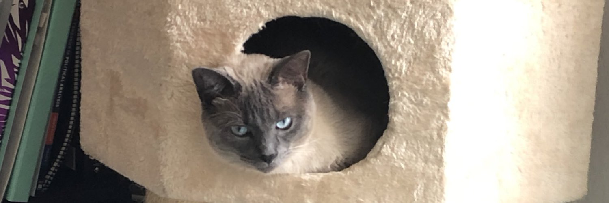
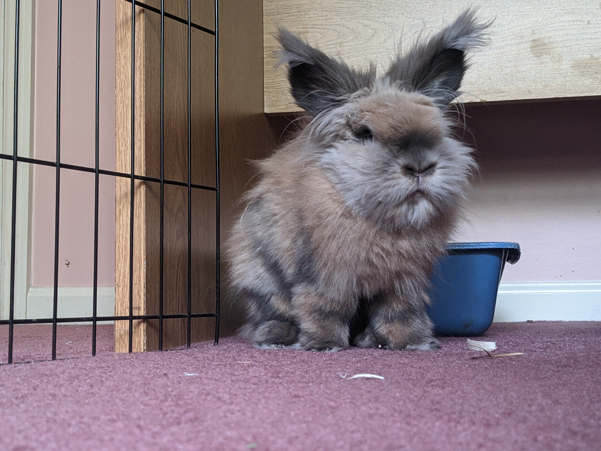

Pet photos
A very cute placeholder post.
pets
photos
other stuff
This is a placeholder for what will eventually become the first blog post. Check back soon for updates and new posts. In the meantime, enjoy some pet photos.
Fisher
 Fisher in his cat garage.
Coconut
 Coconut, nary a thought in his head.
Reuse
Citation
BibTeX citation:
@online{l.ozer2024,
author = {Adam L. Ozer},
title = {Pet Photos},
date = {2024-03-15},
langid = {en}
}
For attribution, please cite this work as:
Adam L. Ozer. 2024. “Pet Photos.” March 15, 2024.